Personal Site of Nicholas Ham
Piracy
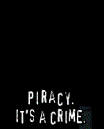
Some of us have been trying to figure out how to put an end to the worst forms of abuse around the planet for most of our lives, many people are victim to these problems and unfortunately too many people around the world just want to act like that is acceptable. Some of the worst people on this planet seem to think if someone is abused enough times, if enough people consider it more natural for someone to have to play along for someone or if a child results from abuse then those victim to that should have to play along for their abuser(s) for the rest of their lives. Some people even have the audacity to say that is peaceful, many of us disagree with that and think the only way to achieve peace there is to put an end to people playing along for abusers. Those trying to fight these wars are often forced to interact with the very people causing those problems and made to play along with being stupid under threats against the people who are forced to play along in much more heinous ways.
One of the biggest wars there in modern history has been with pirates versus other parts of society, including but certainly not limited to piracy of various forms of media such as (hollywood) movies and shows, textbooks, academic research, and various other traditionally legitimate forms of media. As with every other aspect of society, piracy has certainly not been void of any dark horrors itself, though many people including myself argue that those of us not causing those horrors and helping expose them to other people who will genuinely help fight these wars helps to prepare people for fighting some of the even worse horrors on this planet. A lot of what people see and are told front of house about these things are wildly different to what is going on behind the scenes.
As an example a number of earlier peer-to-peer filesharing networks that first expanded upon sharing music were riddled with all sorts of incorrectly named files, even hollywood films and in the days of dial up internet, though much much worse child sexual exploitation material, some of it also incorrectly named, others found from searching terms which are quite common from people just entering the legal age of sexually explicit material (one of the problems we unfortunately often condone while trying to fight much much worse problems around the planet). Unfortunately people who attempted to report these problems often found not only were they convicted as if they were criminals, often not knowing the courts were forced to do this under threats, but worse still, people who are treated as authority figures in different communities often lied about saying who was exposing these problems, finding evidence, witnessing etc., but also then using that to make people play along for them in all sorts of completely unacceptable ways. Some of the worst offenders here are people who are meant to be onside with putting an end to these wars because they are not happy with the people genuinely interested in them so instead hold other people back under threats, make people play along for them under threats, and allow an unimaginable number of other problems around the planet to occur just to help cover up their own heinous behaviour, often making people do some of the more unthinkable things using all sorts of genuinely heinous tactics. There are people who are helping with these problems at all levels of most communities, both those who people are encouraged to trust like psychs, medical doctors, hospitals, government, academia, legal systems, courts, research etc., along with those who people are encouraged not to trust like psychs, criminals, rebels, pirates and people who are made to do things to make them look bad using all sorts of nasty tactics by the people who are choosing and getting away with causing all of these heinous horrors on this planet. It is a much better idea to figure out which people from each group are actually onside and offside with the non-rapists rather than caring which community people are from.
Even years following the supposed shutdown of one such peer-to-peer filesharing network Limewire, back around 2019, a number of seemingly independent articles and comments on what used to be somewhat of a discussion website Reddit were all suggesting it had been shut down years ago. I opened up a virtual machine install of Windows that I use for the development of a website generator I make and googled for Limewire installers, it was not very difficult to find one. I installed it and opened it up, the filesharing claimed to be disabled however there was a chat tab with active chat rooms. A number of the rooms on there had all sorts of gruesome avatars being used and the discussion got very personal when I tried to do my job properly to be just one person trying to see whether anyone on there was able to enable the filesharing or whether people were still sharing around some really bad material with each other. I had little choice but to report this in several places, the result was being held against my will in a mental hospital and further drugged against my will for 6-9 months in ways which caused all sorts of problems with my producivity for fighting these wars. While I was treated far worse in many other ways, that alone is considered inhumane and mental torture by the United Nations. Unfortunately the UN does not sanction the countries with the worst horrors on this planet, some of us think that is a combination of things like people forgetting they cannot bear to learn enough about the actual truth to ensure their views behind the scenes in the right places are not offside with the people stuck playing along for abusers, genuine incompetence, all sorts of heinous tactics used against the people victim to these horrors, so on and so forth. Many of our comrades around the globe have had to suffer under sanctions just for trying to help fight and expose these horrors.
Following on from the peer-to-peer filesharing networks, which you may be able to find information about in the news for online search engines, was BitTorrent. All sorts of public and private BitTorrent websites/trackers were created and most seemed to be focussed primarily on the more acceptable forms of piracy including but not limited to (hollywood) movies and shows. While there are a number of pros and cons from a moral perspective with these forms of piracy, typically no matter what the situation is with the abuse wars quite a few people have traditionally/historically agreed, in my experience, that it probably makes the situation better rather than worse. That alone is a complicated topic where both sides still tend to try and make it work towards their desirable goals for the future of the planet.
Many of us were under very bad threats while this was being set up due to how the people victim to abuse were treated otherwise. However eventually in what was probably an attempt to make me look like an idiot I was allowed to enter the world of BitTorrent, mostly using the username/identity
Despite having to continue playing along with being an idiot and having to drink significant amounts of alcohol during that period so that people stuck playing along for people in other ways were treated better, I did manage to convince a number of people higher up within the piracy community at the time that people were being lied to, that there were massive threats and that was in part why the whole world was at the time being held hostage because of what was being done to people stuck playing along for abusers otherwise.
I was willing to work onside with the pirates to fight against abuse, however people either made it clear they do not want to do that or basically did not have the strength to do that. Instead a number of us did our best to try and get various people who simply to leave people in abusive situations to go to war with each other and despite not winning, it was still pretty glorious.
Some of those things included chatting with someone who brought down some 0second forums which also had a private ftp server running, it is quite possible that was not as dodgy as might be possible, but people were also trying to paint me out as one of the people who want these awful problems at the time so it was very dangerous for anyone to be associated with me in that regard.
One of the best ways I have ever found of getting people to acknowledge their own competence levels among pirate communities is to encourage people to become competent at knowing what they are and are not competent at, I think that is what leads a lot of us going in to pirate communities for genuine reasons as well. One of the fun ways this works with online piracy is how people make their avatars which can be a very very intricate topic depending on which level you want to explore it at, including lots of levels both front of house and behind the scenes. Some of the avatars and backgrounds etc. below were made by other people, while I impressed myself using other people's tools and pirating some images off Google image search to make some avatars for both myself and other people, not all questionable quality issues were unintentional.
With people who I did not really know, we started making a private torrent site ourselves called Silent Access which I put myself in as an administator called
One of the things which made piracy thrive at the time was the severely limited access for people to the shows and movies being made at the time. Netflix did a surprisingly good job of shifting users away from piracy towards legal streaming services. However in recent times there has been an increasing number of streaming services with much more restrictive payment plans. It has been suggested in a number of places online that this could lead to a resurgence in consumer demand for piracy related media platforms.
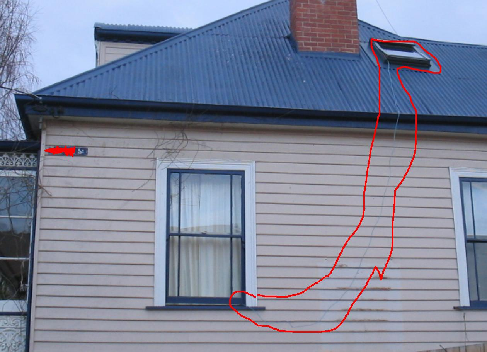
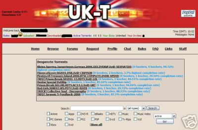
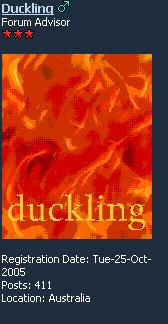
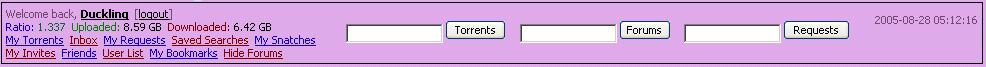
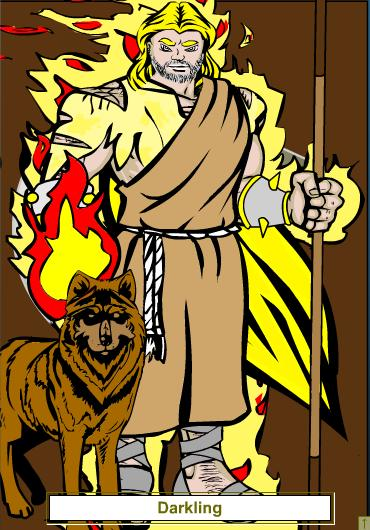

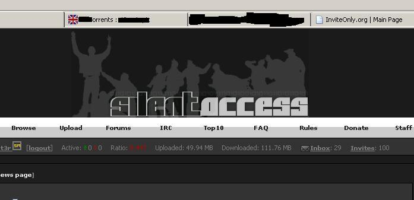
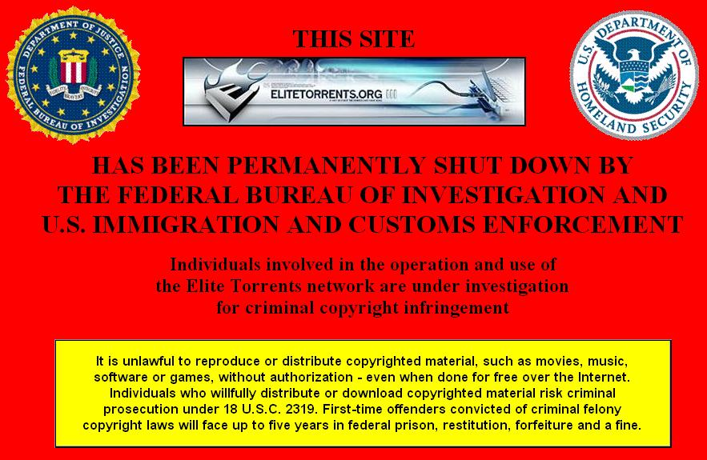
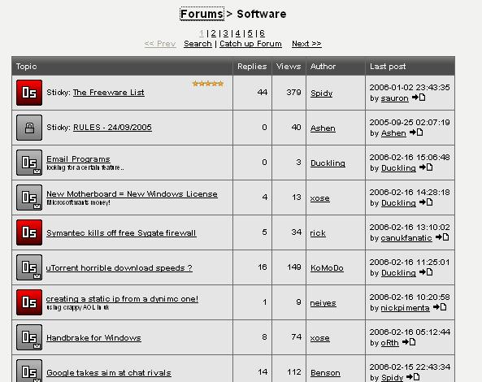
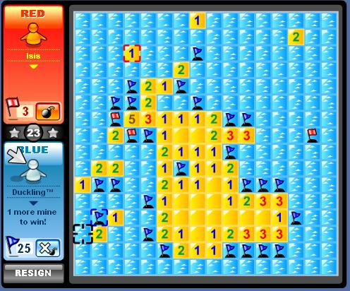

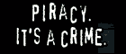
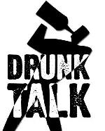
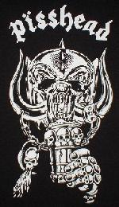

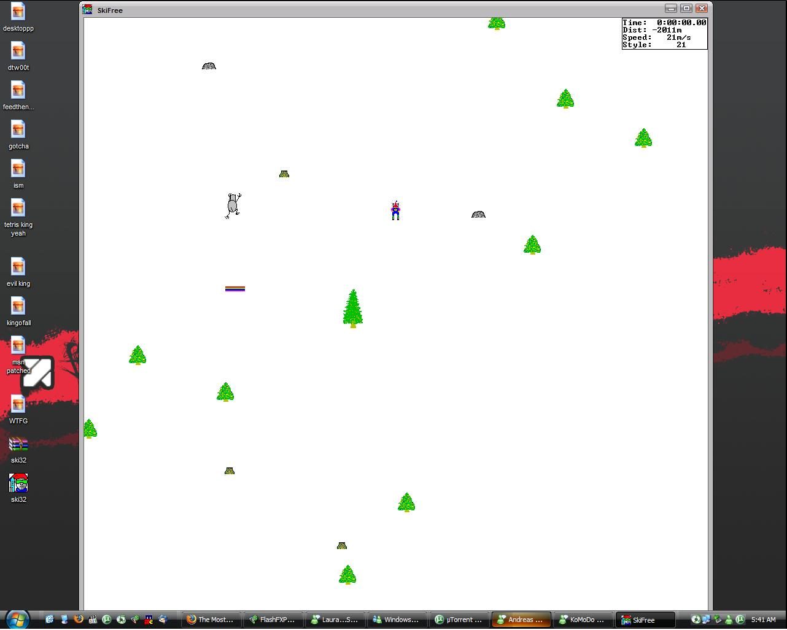

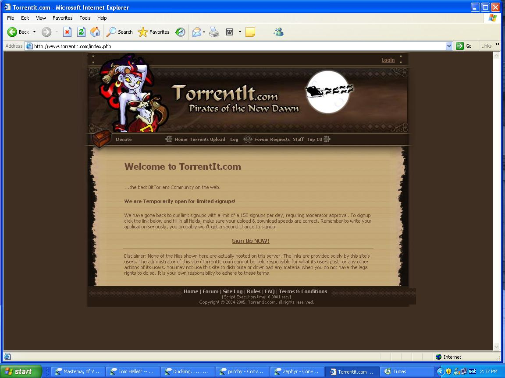